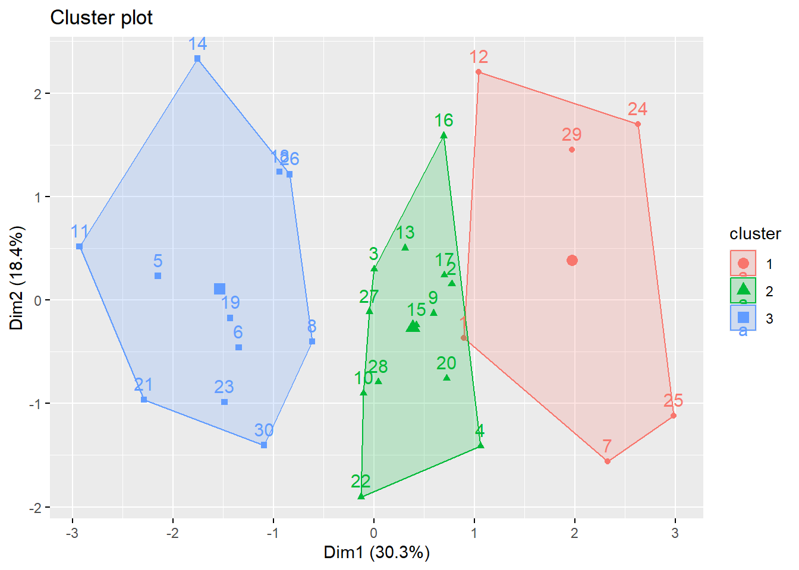

# A tibble: 30 × 7
Age Female Income Married Children Loan Mortgage
<dbl> <dbl> <dbl> <dbl> <dbl> <dbl> <dbl>
1 48 1 17546 0 1 0 0
2 40 0 30085. 1 3 1 1
3 51 1 16575. 1 0 1 0
4 23 1 20375. 1 3 0 0
5 57 1 50576. 1 0 0 0
6 57 1 37870. 1 2 0 0
7 22 0 8877. 0 0 0 0
8 58 0 24947. 1 0 1 0
9 37 1 25304. 1 2 1 0
10 54 0 24212. 1 2 1 0
# ℹ 20 more rowsCustomer Segmentation
Market Segmentation Report
The KTC company would like to segment their customer base based on their characteristics. The company has data of the customers needed for segmentation. To better improve customer relations.
1. Introduction
The KTC company would like to segment their customer base based on their characteristics.The company has data of the customers needed for segmentation we will use the segmented data to better improve customer relations.
2. Descriptive Mining
Customer group of KTC
2.1 Data Exploration
Data frame:crs$dataset[, c(crs$input, crs$risk, crs$target)] 30 observations and 7 variables Maximum # NAs:0
Storage
Age double
Female double
Income double
Married double
Children double
Loan double
Mortgage double Age Female Income Married
Min. :22.00 Min. :0.0000 Min. : 8877 Min. :0.0
1st Qu.:37.25 1st Qu.:0.0000 1st Qu.:18166 1st Qu.:1.0
Median :47.00 Median :1.0000 Median :24241 Median :1.0
Mean :45.97 Mean :0.5667 Mean :28012 Mean :0.8
3rd Qu.:56.75 3rd Qu.:1.0000 3rd Qu.:35923 3rd Qu.:1.0
Max. :66.00 Max. :1.0000 Max. :59804 Max. :1.0
Children Loan Mortgage
Min. :0.0000 Min. :0.0000 Min. :0.0
1st Qu.:0.0000 1st Qu.:0.0000 1st Qu.:0.0
Median :0.5000 Median :0.0000 Median :0.0
Mean :0.9333 Mean :0.4333 Mean :0.4
3rd Qu.:2.0000 3rd Qu.:1.0000 3rd Qu.:1.0
Max. :3.0000 Max. :1.0000 Max. :1.0 We have information regarding 30 customers of KTC company. We have details of their age, gender, income, marital Status, dependents (number of children), financial Status including whether they have a car loan or a mortgage. We also check that all the entries have been taken into account.
2.1.1 Age
We see that there are no outliers from the box plot, from the histogram we can see that most of the people are in the 50s to 60s age and the histogram is left skewed, meaning there are less younger people in the data set.
After exploring the data we see that the minimum age in the customer data set is 22 , the maximum age is 66 and the average age is 45.97
2.1.2 Income

We can see from the summary that the minimum family income is 8877$, the maximum income is 59804$ and the average is 28012$.
We can see from the histogram that the distribution of age is left skewed and the distribution of income is right skewed from this we can see that very few people have incomes in the 30,000 and above range.
2.1.3 Gender
We can see that majority of the customers are female.
2.1.4 Marital Status
The data shows that 80 percent are married in the customer data
2.1.5 Number of children
The data shows that customers has children in the range 0-3, we see from the average that the majority of customers don’t have children
2.1.6 Loan
We can see that majority of the customers do not have loans and about 43% has loans
2.1.7 Mortgage
We can see from the data that majority of the customers do not have a mortgage only about 40% of the customers in the data set has a mortgage.
3 Segmentation using Clustering
We conduct cluster analysis on the data of customers from the KTC company to group similar customers together in order to identify further patterns.
3.1 Hierarchical Clustering
From the dendogram we see that 5 is a good cluster size when doing K-means Clustering.
3.2 K means Clustering
K-means is an unsupervised machine learning algorithm used to partition a dataset into K distinct, non-overlapping clusters based on similarity.It organizes observations into similar groups.
[1] "9 9 3 2 7" Age Female Income Married Children Loan Mortgage
0.5446970 0.5666667 0.3757313 0.8000000 0.3111111 0.4333333 0.4000000 Age Female Income Married Children Loan Mortgage
1 0.5303030 0.5555556 0.40043981 1.0000000 0.2592593 0.4444444 1
2 0.6111111 1.0000000 0.42584074 0.8888889 0.3333333 0.2222222 0
3 0.3939394 1.0000000 0.29405253 0.0000000 0.3333333 1.0000000 1
4 0.0000000 0.0000000 0.03694742 0.0000000 0.3333333 0.5000000 0
5 0.6980519 0.0000000 0.41133723 1.0000000 0.3333333 0.4285714 0[1] 6.4813274 5.0793648 0.8695460 0.7249524 3.1697907
We see that K-means clustering with 5 clusters has a lot of overlapping, to find the optimal number of clusters we find the elbow plot

[1] 1 2 2 2 3 3 1 3 2 2 3 1 2 3 2 2 2 3 3 2 3 2 3 1 1 3 2 2 1 3We can see from the elbow plot that the optimal number of clusters is 3
When we do k-means clustering with 5 clusters we see that the overlapping between some of the clusters will be high and to reduce the overlapping we reduce the number of clusters to 3
After reducing the cluster size to 3 we can see that the overlapping between clusters have been reduced.
cluster_id Age Female Income Married Children Loan Mortgage
1 1 45.33333 0.5555556 29270.20 1.0000000 0.7777778 0.4444444 1
2 2 48.88889 1.0000000 30563.79 0.8888889 1.0000000 0.2222222 0
3 3 39.33333 1.0000000 23852.23 0.0000000 1.0000000 1.0000000 1
4 4 22.00000 0.0000000 10758.68 0.0000000 1.0000000 0.5000000 0
5 5 52.71429 0.0000000 29825.17 1.0000000 1.0000000 0.4285714 0[1] "9 15 6" Age Female Income Married Children Loan Mortgage
0.5446970 0.5666667 0.3757313 0.8000000 0.3111111 0.4333333 0.4000000 Age Female Income Married Children Loan Mortgage
1 0.5303030 0.5555556 0.4004398 1 0.2592593 0.4444444 1.0
2 0.6530303 0.5333333 0.4361136 1 0.3333333 0.3333333 0.0
3 0.2954545 0.6666667 0.1877126 0 0.3333333 0.6666667 0.5[1] 6.481327 11.117786 5.631834# Create a copy of the original dataset (using only rows used in clustering)
data2 <- na.omit(crs$dataset[, crs$numeric])
# Add cluster membership from the kmeans result
data2$cluster_id <- crs$kmeans$cluster
# Clean column names to avoid issues in aggregation
names(data2) <- make.names(names(data2), unique = TRUE)
# Compute mean of each variable per cluster
group_means <- aggregate(. ~ cluster_id, data = data2, FUN = mean)
# Split data by cluster_id
grouped_data <- split(data2, data2$cluster_id)
# Extract individual cluster datasets
data_cluster1 <- grouped_data[[1]]
data_cluster2 <- grouped_data[[2]]
data_cluster3 <- grouped_data[[3]]
# Print group-wise means
print(group_means) cluster_id Age Female Income Married Children Loan Mortgage
1 1 45.33333 0.5555556 29270.20 1 0.7777778 0.4444444 1.0
2 2 50.73333 0.5333333 31086.95 1 1.0000000 0.3333333 0.0
3 3 35.00000 0.6666667 18436.68 0 1.0000000 0.6666667 0.5The KTC company customers have been reduced to 3 clusters now
Cluster one has an average age of 45 with mostly married individuals who most likely have children , they are individuals who have dependents
Cluster two is has the highest average age and the highest income they have the the lowest mortgage numbers and loans among the group.
Cluster three has a average age of 35 and has the lowest income among the group they have a moderate chance of having loans and mortgages.